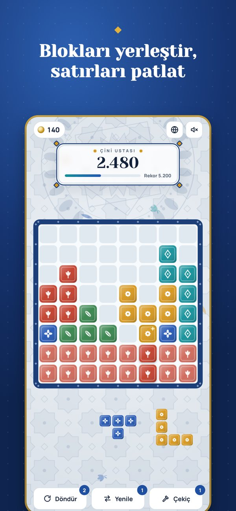
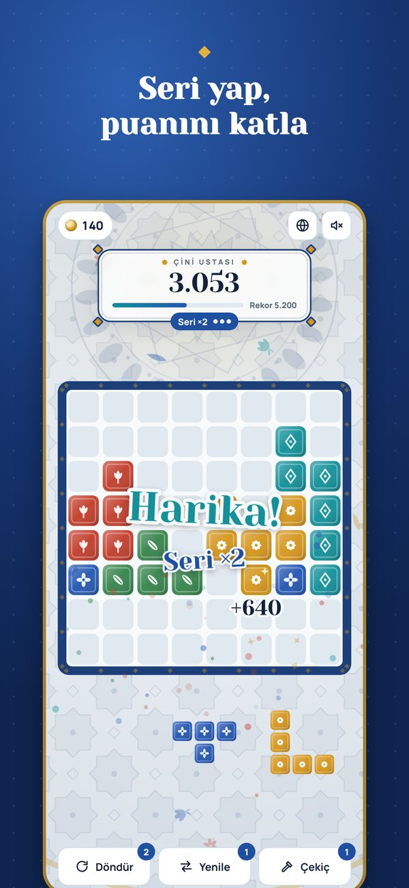
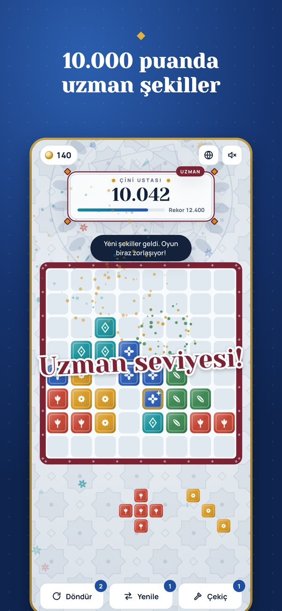

Nasıl oynanır
Kuralları bir dakikada öğrenirsin, ustalaşmak ise uzun sürer.
-
Sürükle
Alttaki üç parçadan birini seç ve tahtada boş bir yere bırak.
-
Patlat
Dolan satır ya da sütun kırılır ve puan getirir. Birden çok çizgi aynı anda daha çok kazandırır.
-
Seri yap
Üç hamle içinde tekrar çizgi kırarsan seri büyür, puanın katlanır.
Oyundan kareler



Neden seveceksin
- Her rengin kendi motifiLale, rozet, baklava, saz yaprağı ve sekiz köşeli yıldız.
- Altın çinilerKırdığın her altın çini kesene altın ekler.
- Desen tamam bonusuTek renkten bir satır tamamlarsan ekstra puan ve altın.
- Üç güçlendiriciDöndür, Yenile ve Çekiç ile zor anlardan kurtul.
- Uzman seviyesi10.000 puanda yeni şekiller gelir, tahta bordoya döner, oyun zorlaşır.
- Her yerde oynaİnternet gerekmez. Türkçe, İngilizce, Portekizce, Almanca, Fransızca, Japonca ve Korece.
Destek
Bir sorun mu yaşadın ya da önerin mi var? Bize yaz, en kısa sürede dönelim.
[iletişim e-postanız]